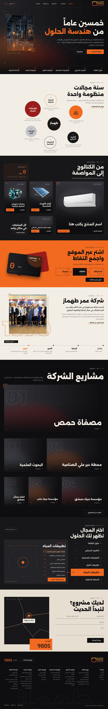
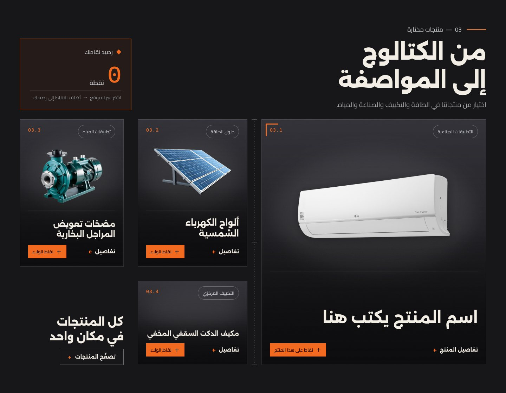
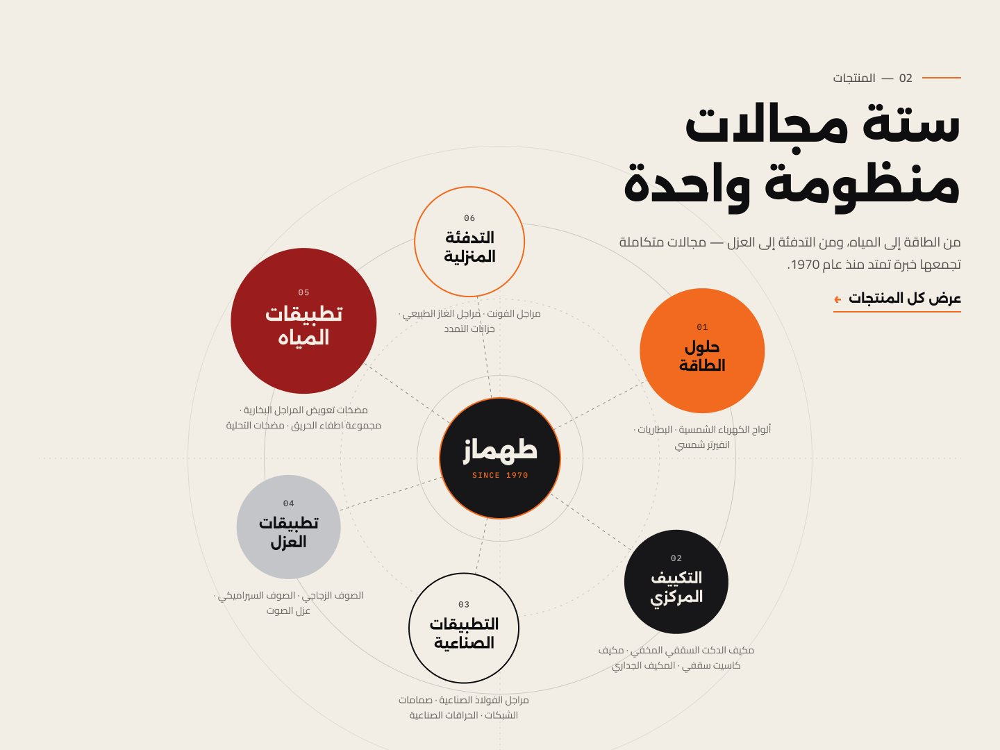
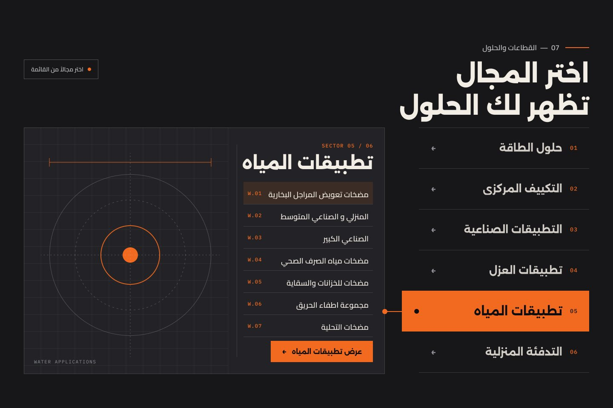
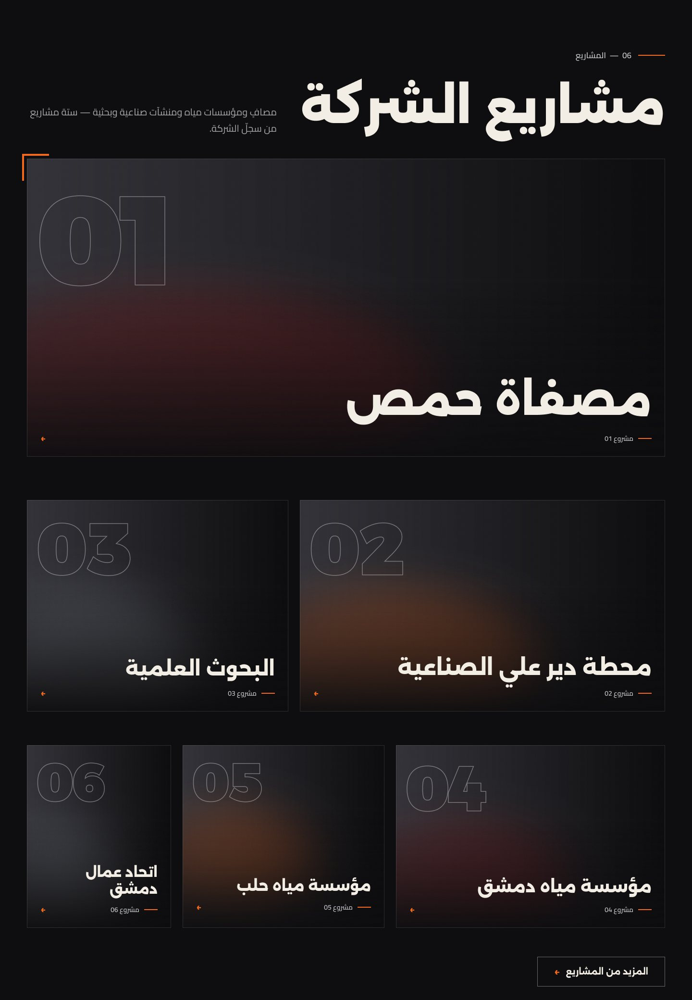
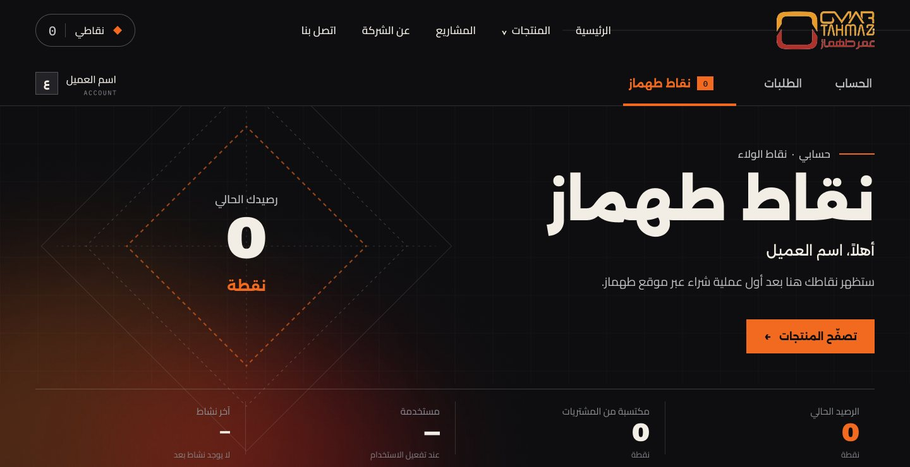
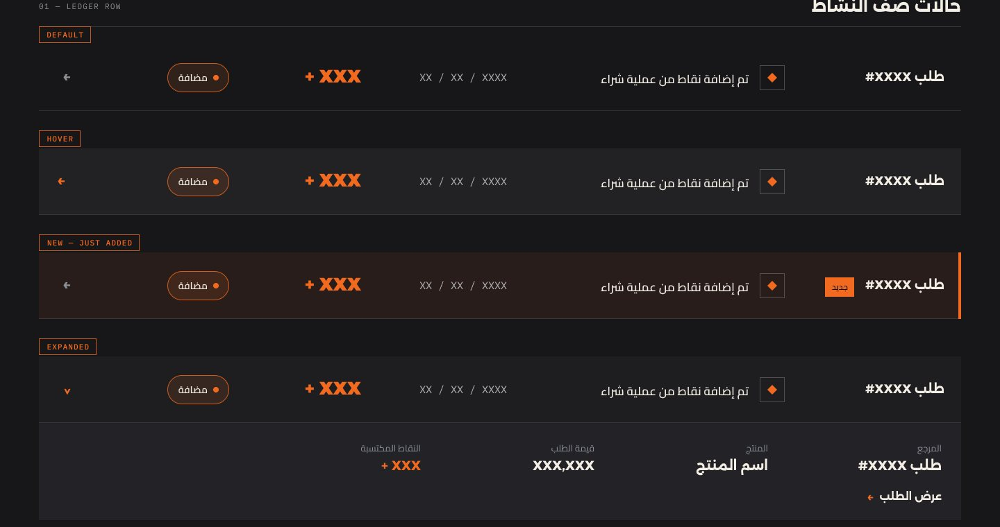
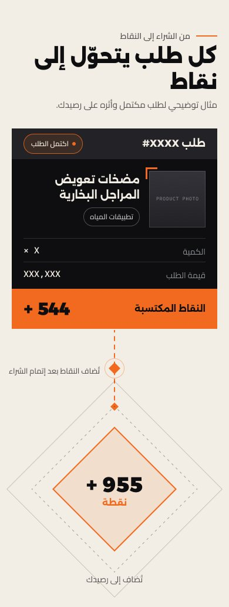

طهماز
من حضور رقمي تقليدي إلى تجربة تليق بحجم طهماز
رؤية مقترحة لتطوير تجربة طهماز الرقمية
02الموقع اليوم
طهماز أكبر من الصورة التي يقدمها موقعها الحالي
ما يملكه الموقع اليوم
المنتجات الفئات المشاريع تاريخ الشركة الخبرة التقنية
- 01المحتوى أقوى من طريقة تقديمه
- 02المنتجات تظهر بشكل أقرب إلى الكتالوج
- 03المشاريع والخبرة تحتاج حضورًا بصريًا أقوى
- 04تجربة التصفح يمكن أن تصبح أوضح وأكثر حداثة
03فرصة التحول
من موقع يعرض المنتجات
- منتجات
- حلول
- مشاريع
- ثقة
- علاقة مستمرة مع العميل
إلى تجربة رقمية تعكس حجم طهماز
04التجربة الجديدة
ماذا ستغيّر التجربة الجديدة؟
نفس أقسام الموقع، بتجربة مختلفة في كل طبقة.
- 01
اكتشاف أفضل
الوصول إلى المنتجات والفئات بشكل أوضح.
- 02
عرض أقوى للمنتجات
تقديم تقني وبصري أكثر احترافية.
- 03
حضور أقوى للمشاريع
إظهار حجم خبرة طهماز وتنفيذاتها.
- 04
هوية رقمية أكثر قوة
تجربة تليق بتاريخ وحجم الشركة.
- 05
تجربة شراء أكثر ترابطًا
دمج الحساب والشراء ونقاط الولاء بشكل طبيعي.

05الاتجاه الجديد
هذه ليست مجرد واجهة أجمل بل طريقة جديدة لعرض طهماز
- 01الواجهة
- 02منظومة المجالات
- 03المنتجات
- 04نقاط الولاء
- 05قصة الشركة
- 06المشاريع
- 07الحلول
- 08التواصل
06من التصفح إلى الاكتشاف
ستة مجالات، طريق واضح إلى كل منتج
- 01حلول الطاقة
- 02التكييف المركزي
- 03التطبيقات الصناعية
- 04تطبيقات العزل
- 05تطبيقات المياه
- 06التدفئة المنزلية



07المشاريع
لا نقول إن لدينا خبرة فقط بل نُظهرها
- 01مصفاة حمص
- 02محطة دير علي الصناعية
- 03البحوث العلمية
- 04مؤسسة مياه دمشق
- 05مؤسسة مياه حلب
- 06اتحاد عمال دمشق

08من عملية شراء إلى علاقة مستمرة
الشراء لا يجب أن يكون نهاية العلاقة
نقاط طهماز
كل عملية شراء عبر الموقع تضيف نقاطًا إلى حساب العميل.
- شراء
- جمع نقاط
- رصيد داخل الحساب
- استفادة مستقبلية
09نقاط الولاء داخل التجربة
ليست صفحة ترويجية بل جزء من حساب العميل
- Aالرصيد ظاهر في شريط التنقل
- Bلوحة النقاط داخل الحساب
- Cسجل النقاط المرتبط بالطلبات
- Dنقاط كل طلب مكتمل
القيم في التصاميم توضيحية



10نقاط طهماز
كيف تعمل؟
- 01
اشترِ
اشترِ منتجاتك عبر موقع طهماز.
- 02
اجمع نقاطك
تُضاف النقاط إلى رصيدك بحسب مشترياتك.
- 03
تابع رصيدك
رصيدك وسجل نقاطك داخل حسابك.
- 04
استفد منها
وفق آلية البرنامج.
11قيمة النظام لطهماز
من نقطة بيع إلى قناة علاقة مستمرة
Tahmazالعميل
01تشجيع تكرار الشراء
02تعزيز ارتباط العميل بطهماز
03إضافة قيمة إلى الحساب الشخصي
04بناء تجربة ما بعد الشراء
12نطاق المقترح
ما الذي يتغير، وما الذي يبقى؟
Site map · unchanged
- الرئيسية
- المنتجات
- المشاريع
- عن الشركة
- اتصل بنا
- الحساب + نقاط طهماز
—يبقى
- هيكل الموقع الأساسي
- أقسام المنتجات الحالية
- المشاريع
- معلومات الشركة
- التواصل
- المحتوى التجاري الأساسي
↻يتطور
- التصميم
- تجربة الاستخدام
- أسلوب عرض المنتجات
- طريقة عرض المشاريع
- التنقل
- تجربة الشراء
- تجربة الحساب
+يضاف
نظام نقاط الولاء
الإضافة الرئيسية الوحيدة — دون إعادة بناء هيكل الموقع.
13الرؤية النهائية
موقع لا يكتفي بعرض منتجات طهماز بل يعكس خبرتها ويقوّي علاقتها بعملائها
- منتجات
- حلول
- مشاريع
- شراء
- ولاء
الخطوة القادمة
أن تصبح تجربة طهماز الرقمية بحجم طهماز نفسها
UpToMedia
×